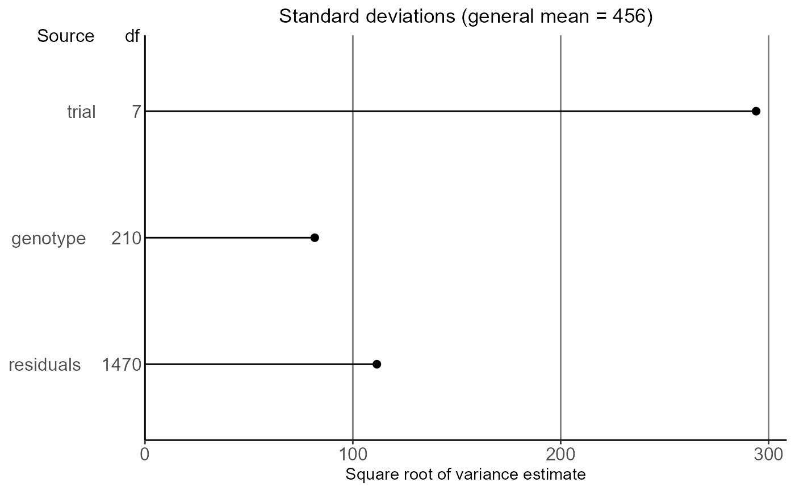

gxeVarComp.RdThis function fits a mixed model best fitting to the data in a TD object.
The exact model fitted is determined by both the structure of the genotype by
environment table of observations and the chosen parameters.
Six different types of models can be fitted depending on the structure of
the environments in the data. These models are described in the table below,
together with the function parameters used in gxeVarComp to fit the model.
| Structure of environments | Model | Function parameters |
| Environments correspond to trials | trait = trial + genotype + genotype:trial | |
| Trials form a factorial structure of locations x years | trait = year + location + year:location + genotype + genotype:year + genotype:location + genotype:year:location | locationYear = TRUE |
| Trials are nested within year | trait = year + year:trial + genotype + genotype:year + genotype:year:trial | nestingFactor = "year" |
| Trials are nested within locations | trait = location + location:trial + genotype + genotype:location + genotype:location:trial | nestingFactor = "loc" |
| Trials correspond to locations within regions across years | trait = region + region:location + year + region:year + region:location:year + genotype + genotype:region + genotype:region:location + genotype:year + genotype:region:year + genotype:region:location:year | regionLocationYear = TRUE |
| Trials are nested within scenarios | trait = scenario + scenario:trial + genotype + genotype:scenario + genotype:scenario:trial | nestingFactor = "scenario" |
In the models above the random part of the model is printed bold.
For data in the form of GxE means, the last random term in all models above
will become a residual term. If the GxE means are provided together with
weights, then a residual term will be added to the models above.
The function first fits a model where all model terms are included as fixed
terms. Based on the ANOVA table of this model, terms in the fixed part of the
model that are likely to give a problem when fitting the mixed model are
removed because of the reduced connectivity and number of available
observations to estimate that model term. Also a warning is printed if the
mean sum of squares for a model term points to a possible zero variance
component in the mixed model.
Then a model is fitted where all model terms are included as random terms.
Based on the variance components in this model the percentage of variance
explained by each of the model components is determined. The percentages of
variance are printed in the model summary, together with the variance
components. The latter are presented on a standard deviation scale.
Finally a mixed model is fitted as specified in the overview above. Based on
this mixed model variance components can be computed using vc,
heritabilies can be computed using herit and predictions can be
made using predict.varComp. Predictions of genotypic
performance can be made at the level of individual trials, or for groups of
trials by using predictLevel.
gxeVarComp( TD, trials = names(TD), trait, engine = c("lme4", "asreml"), locationYear = FALSE, nestingFactor = NULL, regionLocationYear = FALSE, useWt = FALSE, diagnostics = FALSE )
| TD | An object of class |
|---|---|
| trials | A character string specifying the trials to be analyzed. If not supplied, all trials are used in the analysis. |
| trait | A character string specifying the trait to be analyzed. |
| engine | A character string specifying the engine used for modeling. Either "lme4" or "asreml". |
| locationYear | Should a model be fitted assuming a factorial structure of locations x years? |
| nestingFactor | A character string specifying a column in TD specifying the nesting structure of the trials. |
| regionLocationYear | Should a model be fitted assuming locations within regions across years? |
| useWt | Should the model be fitted using weights? Doing so requires a
column wt in the data. If |
| diagnostics | Should diagnostics on missing combinations of model variables be printed? |
An object of class varComp, a list containing:
The fitted model.
A data.frame containing the data used when fitting the model.
A name of the variable used as nesting variable in the model.
A boolean specifying if a model containing location x year interaction was fitted.
A data.frame containing the variance components for the fully random model.
A data.frame containing the ANOVA table for the fully fixed model.
The engine used for fitting the model.
A list of data.frame, one for each random model term, containing the missing combinations in the data for that term.
Other Mixed model analysis:
CRDR(),
correlations(),
diagnostics(),
herit(),
plot.varComp(),
predict.varComp(),
vc()
## Fit a mixed model. geVarComp <- gxeVarComp(TD = TDMaize, trait = "yld") ## Summarize results. summary(geVarComp)#> Fitted model formula #> yld ~ trial + (1 | genotype) #> #> Sources of variation #> component % variance expl. #> trial 86448.61 81.89 % #> genotype 6670.93 6.32 % #> residuals 12446.94 11.79 % #> #> Analysis of Variance Table for fully fixed model #> Df Sum Sq Mean Sq F value Pr(>F) #> trial 7 127771687 18253098 1466.4731 < 2.2e-16 *** #> genotype 210 13821018 65814 5.2876 < 2.2e-16 *** #> residuals 1470 18296997 12447 #> --- #> Signif. codes: 0 '***' 0.001 '**' 0.01 '*' 0.05 '.' 0.1 ' ' 1#> genotype trial predictedValue #> 1 G001 HN96b 529.1555 #> 2 G002 HN96b 508.8126 #> 3 G003 HN96b 500.3794 #> 4 G004 HN96b 375.9096 #> 5 G005 HN96b 495.8588 #> 6 G006 HN96b 454.9297